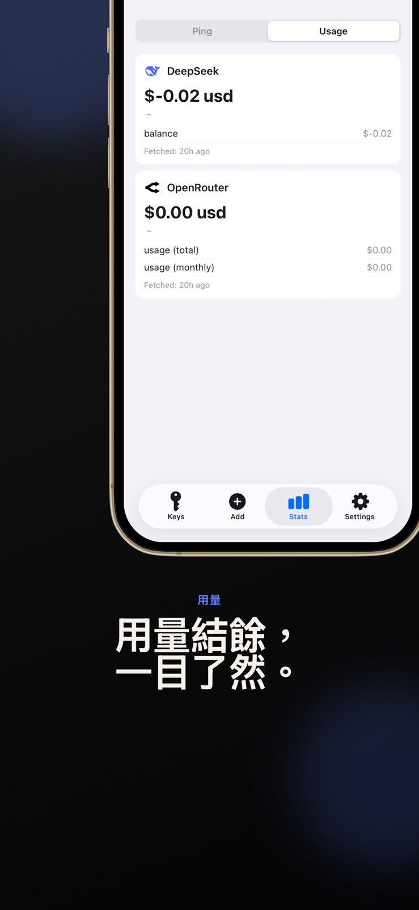
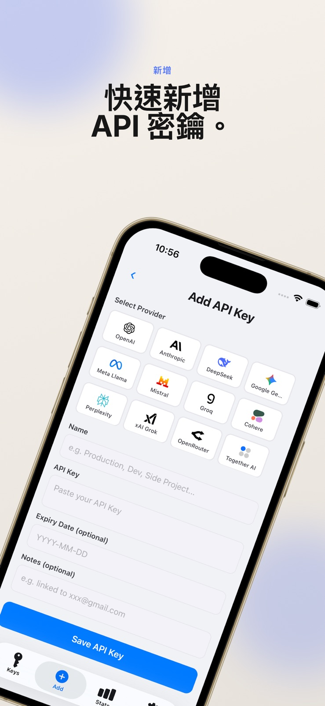

多服務管理
集中整理 OpenAI、Anthropic、Gemini、DeepSeek 等 AI 服務密鑰。
API MATRIX
集中管理多個 AI 服務的 API 密鑰，從安全儲存到連線測試，井然有序。



LOCAL STORAGE
憑證儲存在裝置本地，配合 Face ID 或指紋解鎖，讓管理流程兼顧便利與私隱。
TEST & TRACK
測試密鑰連線與延遲，並查閱支援服務的用量和費用，減少切換工具的步驟。
集中整理 OpenAI、Anthropic、Gemini、DeepSeek 等 AI 服務密鑰。
驗證密鑰與服務端點，快速了解連線狀態。
匯出 curl 指令、.env 片段及 OpenRouter 設定。
A CLOSER LOOK
官方 App Store 截圖，點選即可放大。
用量及費用追蹤僅適用於支援的服務；連線測試與資料查詢需要網絡。